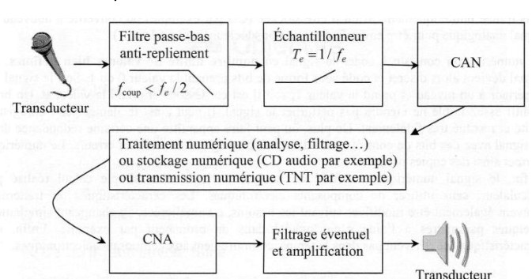
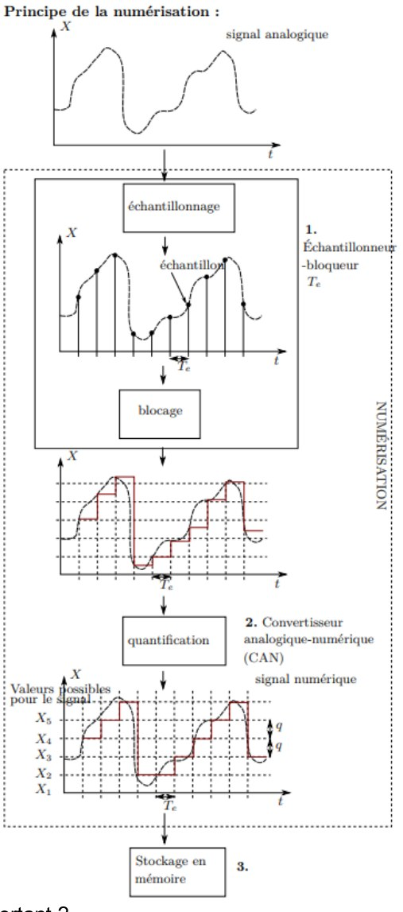
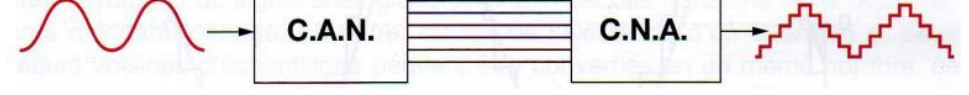
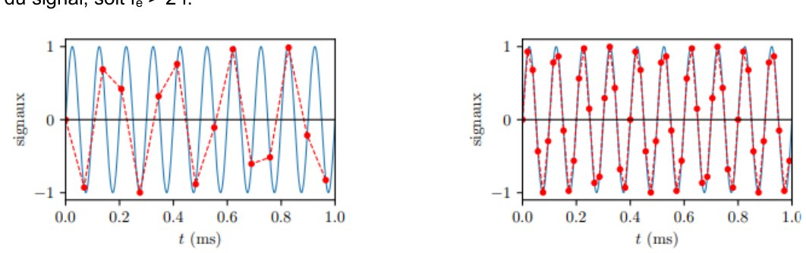
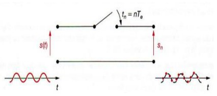
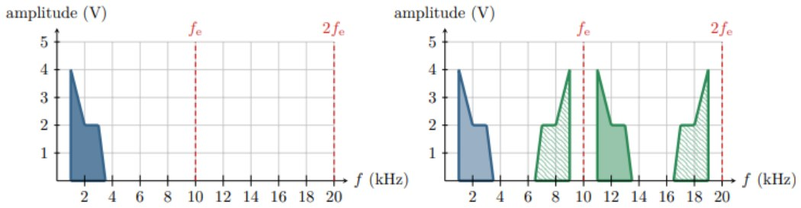

Ch6 — Électronique numérique : numérisation, échantillonnage, spectre numérique
Une grande partie des filtres actuels sont des algorithmes de calcul appliqués à un signal préalablement numérisé. Ce chapitre explique comment on passe d'un signal analogique à une suite de nombres : la chaîne d'acquisition, l'échantillonnage (critère de Nyquist-Shannon, repliement spectral), la quantification (résolution, pas de quantification) et la résolution du spectre numérique (FFT, fuite spectrale). Les 10 questions du cours sont corrigées en entier, puis 4 exercices d'entraînement. AM2 · P2030 · Semestre 3 — D. Courtois, cours daté du 19/10/2026.
1. Résumé de cours
Cours6.pdf, « Ch6 Électronique numérique » (D. Courtois, AEM2 · P2030 · S3, daté du 19/10/2026), 4 pages. Les questions du polycopié (Q1 à Q10) sont corrigées dans la section 2 ;
les figures du cours sont reproduites là où elles servent la correction.1.1 · Généralités
Un signal est une grandeur physique porteuse d'information. Ces grandeurs varient en général continûment dans le temps et l'espace : ce sont des signaux analogiques. On les convertit en tensions électriques (faciles à traiter) avec des capteurs / transducteurs.
Intérêts du numérique : stockage, transmission (sans altération) et traitement (filtrage par calcul) facilités.
1.2 · Structure d'une chaîne d'acquisition
- conversion du signal physique en signal électrique analogique \(u\) (transducteur) ;
- échantillonnage : discrétisation temporelle de \(u\) en un nombre donné de mesures ;
- quantification : on assigne à chaque mesure une valeur discrète ;
- traitement numérique (filtrage, analyse), stockage ou transmission ;
- (optionnel) conversion numérique-analogique + transduction pour restituer une réponse analogique.

1.3 · Les deux grandes étapes : échantillonnage et quantification

Un CAN se caractérise, outre sa pleine échelle et sa résolution, par sa vitesse et sa précision, qui dépendent de la technologie : les convertisseurs à rampe sont lents mais très précis et bon marché ; ceux à approximations successives sont plus rapides et sont les plus utilisés. (Le polycopié écrit « 10 ms » dans les deux cas, ce qui est manifestement une coquille pour les approximations successives, nettement plus rapides, de l'ordre de la dizaine de µs.)

1.4 · Échantillonnage : le critère de Nyquist-Shannon
Le choix de \(f_e\) est un compromis : assez basse pour limiter le nombre d'échantillons \(N\) (donc la taille du fichier) et laisser au CAN le temps de convertir ; assez haute pour refléter correctement les variations du signal (sinon perte d'information).

1.5 · Point de vue spectral : répliques et repliement
Il y a une dualité temps-fréquence : une périodicité dans un domaine donne une discrétisation dans l'autre.
- Un signal périodique (période \(T\)) se décompose en une somme discrète d'harmoniques à \(f_n=n/T\).
- Une discrétisation temporelle (une capture tous les \(T_e\)) rend le spectre périodique : le spectre échantillonné contient les raies du signal analogique et leurs répliques autour de \(f_e\) et de ses multiples (\(nf_e\pm f\)). C'est un enrichissement spectral : l'échantillonnage n'est pas une opération invariante temporellement.

1.6 · Résolution du spectre numérique (FFT)
En pratique, on calcule le spectre sur une fenêtre de calcul (une portion de temps = la durée d'acquisition), dont les bords sont lissés pour éviter des effets parasites : l'oscilloscope propose plusieurs fenêtrages (en TP : fenêtre de Hann). Le spectre calculé ne contient que \(N\) fréquences (\(N\) = nombre d'échantillons) entre 0 et \(f_e\), donc sa résolution est fixée par la durée d'acquisition : \[ \boxed{\Delta f=\frac{f_e}{N}=\frac1\tau}\ . \] Pour un spectre précis, l'acquisition doit être longue et contenir un grand nombre de périodes.
2. Applications du cours corrigées (Q1 à Q10)
Les dix questions du polycopié, dans l'ordre. L'énoncé de chaque question est rappelé juste au-dessus de sa correction ; les figures dont la question dépend sont reproduites ou tracées.
« Associer les transducteurs suivants à la conversion énergétique adéquate : des écouteurs, une photodiode, une thermorésistance, un cristal piézoélectrique, un capteur à effet Hall et un hydrophone. »
| Transducteur | Conversion | Remarque |
|---|---|---|
| Écouteurs | électrique → acoustique (sonore) | transducteur de sortie (après le CNA) |
| Photodiode | lumineuse → électrique | photocourant proportionnel à l'éclairement |
| Thermorésistance (CTN/CTP) | thermique → électrique | la résistance varie avec la température ; un montage (diviseur, pont) la convertit en tension |
| Cristal piézoélectrique | mécanique (contrainte, pression) → électrique | réversible : une tension déforme le cristal (quartz, buzzer) |
| Capteur à effet Hall | magnétique (champ \(B\)) → électrique | tension de Hall proportionnelle à \(B\) |
| Hydrophone | acoustique sous-marine (pression) → électrique | « microphone » immergé, souvent à céramique piézoélectrique |
« Citer un exemple où un signal analogique est numérisé dans le temps et un exemple où un signal analogique est numérisé dans l'espace. »
- Dans le temps : un enregistrement audio (la tension du microphone est mesurée 44 100 fois par seconde pour un CD, \(T_e\approx22{,}7\ \mu\text{s}\)) ; un relevé de température toutes les minutes ; un électrocardiogramme.
- Dans l'espace : une image numérique (le capteur CCD/CMOS d'un appareil photo mesure l'éclairement en un nombre fini de points, les pixels, régulièrement espacés) ; un scanner ; une carte de pression échantillonnée sur une grille de capteurs.
Dans les deux cas : discrétisation de la variable (temps ou position), puis quantification de la grandeur mesurée.
« a) Donner le nom et les signaux convertis des deux transducteurs. b) Retrouver le bloc de la discrétisation temporelle et expliquer les symboles qu'il contient. c) Retrouver le bloc de la quantification. d) Que signifie CNA ? Que dire du signal en sortie ? e) Lister les blocs impliquant du filtrage ; proposer un intérêt à chacun. »
a) Les deux transducteurs
- Entrée : un microphone — convertit le signal acoustique (variations de pression) en signal électrique (tension) ;
- Sortie : un haut-parleur (ou casque) — convertit la tension électrique en signal acoustique.
b) Discrétisation temporelle
Il contient deux symboles : \(T_e=1/f_e\) (période et fréquence d'échantillonnage : un prélèvement toutes les \(T_e\)) et un interrupteur (symbole du contact) : c'est l'interrupteur commandé qui se ferme brièvement aux dates \(t=nT_e\) pour laisser passer la valeur du signal, puis s'ouvre ; le blocage maintient la valeur le temps de la conversion.
c) Quantification
d) CNA
e) Blocs impliquant du filtrage
| Bloc | Intérêt |
|---|---|
| Filtre passe-bas anti-repliement (\(f_c<f_e/2\)), avant l'échantillonneur | supprimer les fréquences \(>f_e/2\) qui, sinon, se replieraient dans la bande utile (repliement spectral, non corrigeable après coup) |
| Traitement numérique (analyse, filtrage…) | filtrage par calcul du signal numérisé (filtres numériques : suppression du bruit, sélection d'une bande, etc.) |
| Filtrage éventuel et amplification, après le CNA | lisser les marches d'escalier et éliminer les répliques spectrales (filtre de reconstruction), puis amplifier pour attaquer le transducteur de sortie |
« Pourquoi la vitesse du CAN est-elle un critère important ? »
Le CAN doit terminer la conversion d'un échantillon avant l'arrivée du suivant : son temps de conversion \(t_{conv}\) doit vérifier \(t_{conv}<T_e=1/f_e\), donc \(f_e<1/t_{conv}\). La vitesse du CAN limite la fréquence d'échantillonnage maximale, et donc, par Nyquist-Shannon, la fréquence maximale \(f_{max}<f_e/2\) des signaux qu'on peut numériser correctement.
Compromis : les CAN rapides (approximations successives) sont plus chers/moins précis que les CAN à rampe (lents, très précis, bon marché).
« Calculer la taille d'un fichier numérique (en Mo) d'un morceau de musique de 3 minutes numérisé à 80 kHz avec un CAN 8 bits. »
Données. Durée \(\tau=3\ \text{min}=180\) s ; \(f_e=80\) kHz \(=8{,}0\times10^4\) Hz ; résolution \(p=8\) bits \(=1\) octet par échantillon.
Nombre d'échantillons. \(N=f_e\,\tau=8{,}0\times10^4\times180=1{,}44\times10^7\).
Taille. \(N\times p=1{,}44\times10^7\times8\) bits \(=1{,}152\times10^8\) bits \(=1{,}44\times10^7\) octets.
« On dispose d'un voltmètre numérique de résolution 6 bits. Pour mesurer une tension dont la valeur vraie est 154,45 mV, on se place sur le calibre 0–200 mV. Calculer le pas de quantification, la valeur affichée par le voltmètre et affecter le code de sortie binaire correspondant. »
1) Pas de quantification. \(p=6\) : \(2^6=64\) codes (de 0 à 63), pleine échelle \(\Delta s=200\) mV :
\[ q=\frac{\Delta s}{2^p-1}=\frac{200}{63}\approx3{,}17\ \text{mV}\qquad\Bigl(\text{et }\tfrac{\Delta s}{2^p}=3{,}125\ \text{mV avec l'approximation}\Bigr). \]2) Valeur affichée. Nombre de pas dans la valeur vraie : \(\dfrac{154{,}45}{3{,}1746}=48{,}65\). On prend la valeur discrète la plus proche : \(n=49\).
\[ U_{aff}=49\times3{,}1746\approx\mathbf{155{,}6\ mV}\quad(\text{erreur }+1{,}1\ \text{mV}<q/2=1{,}59\ \text{mV},\ \text{soit }0{,}7\ \%). \]3) Code binaire. \(49=32+16+1=2^5+2^4+2^0\) :
Avec l'approximation \(q=3{,}125\) mV : \(154{,}45/3{,}125=49{,}4\to49\) donc le même code 110001, affichage \(49\times3{,}125=153{,}1\) mV : les deux conventions donnent le même code, à \(q/2\) près sur la valeur affichée.

« Compléter le(s) graphique(s) pour illustrer correctement les explications ci-dessus. »
Lecture. Le spectre analogique (en bleu) occupe \([1\,;\,3{,}5]\) kHz : il vaut 4 V à 1 kHz, décroît jusqu'à 2 V à 2 kHz, reste à 2 V jusqu'à 3 kHz, puis tombe à 0 à 3,5 kHz. Donc \(f_{max}=3{,}5\) kHz, et \(f_e=10\) kHz \(>2f_{max}=7\) kHz : Nyquist-Shannon est respecté.
Construction. Le spectre échantillonné contient le spectre analogique et ses répliques autour de \(f_e\), \(2f_e\)… : chaque réplique est la copie du spectre analogique (côté \(+f\)) et son image miroir (côté \(-f\)) :
- autour de \(f_e=10\) kHz : \(f_e+f\) (de 11 à 13,5 kHz, copie directe) et \(f_e-f\) (de 6,5 à 9 kHz, miroir) ;
- autour de \(2f_e=20\) kHz : \(2f_e-f\) (de 16,5 à 19 kHz) et \(2f_e+f\) (de 21 à 23,5 kHz, hors du cadre du graphe fourni).
« Schématiser la situation du repliement spectral (comme précédemment, avec \(f_e=10\) kHz mais maintenant avec \(f_{max}=7\) kHz). »
Ici \(f_{max}=7\ \text{kHz}>f_e/2=5\) kHz : Nyquist-Shannon n'est pas respecté (\(f_e=10<2f_{max}=14\) kHz). La réplique \(f_e-f\) s'étend de \(f_e-f_{max}=3\) kHz à \(f_e=10\) kHz, alors que le spectre analogique occupe de 0 à 7 kHz : les deux se recouvrent entre 3 et 7 kHz.
« Quand on effectue une FFT avec les oscilloscopes du labo, la fréquence d'échantillonnage utilisée dépend de l'échelle choisie \(f_{div}\) (en Hz/div), de sorte que \(f_e=20\times f_{div}\). Quel est l'intérêt d'un tel rapport ? »
L'écran compte 10 divisions horizontales. L'axe des fréquences affiché va donc de 0 à \(10\,f_{div}\) :
\[ 10\,f_{div}=\frac{20\,f_{div}}2=\frac{f_e}2 . \]En pratique : on choisit \(f_{div}\) tel que \(10\,f_{div}>f_{max}\) du signal, et l'oscilloscope règle seul \(f_e=20f_{div}\).
« On considère un signal échantillonné à 100 kHz pendant 500 ms. Combien d'échantillons auront été enregistrés ? Quelles seront les fréquences possiblement présentes dans le spectre ? »
Échantillons. \(N=f_e\,\tau=100\times10^3\times0{,}5=\mathbf{5{,}0\times10^4}\) échantillons.
Résolution. \(\Delta f=\dfrac1\tau=\dfrac1{0{,}5}=2\ \text{Hz}\) (ou \(\dfrac{f_e}N=\dfrac{10^5}{5\times10^4}=2\) Hz ✓).
3. Exercices d'entraînement créés
Quatre exercices pour fixer les calculs types du chapitre. Toutes les valeurs numériques ont été vérifiées par calcul.
Un microphone délivre une tension comprise entre \(-1\) V et \(+1\) V. On le numérise avec un CAN de 16 bits, à \(f_e=44{,}1\) kHz, en stéréo, pendant 4 minutes. (1) Pas de quantification ? (2) Nombre minimal de bits pour \(q\le100\ \mu\)V ? (3) Taille du fichier et débit ? (4) Fréquence de coupure du filtre anti-repliement pour un signal audio jusqu'à 20 kHz ?
1) Pas de quantification
\(\Delta s=2\) V, \(p=16\) : \(\ q=\dfrac{2}{2^{16}-1}=\dfrac2{65\,535}\approx\mathbf{30{,}5\ \mu V}\).
2) Bits minimaux pour \(q\le100\ \mu\)V
\(\dfrac2{2^p-1}\le10^{-4}\iff2^p-1\ge20\,000\iff2^p\ge20\,001\iff p\ge\log_2(20\,001)\approx14{,}29\). Donc :
3) Taille du fichier et débit
\(\tau=4\times60=240\) s ; \(N=240\times44\,100=10\,584\,000\) échantillons par voie. Deux voies, 16 bits :
\[ \text{taille}=10\,584\,000\times2\times16=3{,}387\times10^8\ \text{bits}=4{,}23\times10^7\ \text{octets}\approx\mathbf{42{,}3\ Mo}\ (40{,}4\ \text{Mio}). \]4) Filtre anti-repliement
Nyquist : \(f_e=44{,}1\ \text{kHz}>2\times20=40\) kHz ✓. Le filtre passe-bas placé avant l'échantillonneur a pour coupure \(f_c=\dfrac{f_e}2=\mathbf{22{,}05\ kHz}\) : il laisse passer toute la bande audio (jusqu'à 20 kHz) et élimine ce qui dépasse \(f_e/2\). L'écart entre 20 et 22,05 kHz laisse la place à la pente non idéale du filtre.
Un voltmètre numérique 8 bits, calibre 0–5 V, mesure une tension vraie de 3,30 V. (1) Pas de quantification ? (2) Valeur affichée et code binaire ? (3) Erreur de quantification maximale ? (4) Combien de bits faut-il pour \(q\le1\) mV sur ce calibre ?
1) Pas de quantification
\(q=\dfrac{5}{2^8-1}=\dfrac5{255}\approx\mathbf{19{,}6\ mV}\).
2) Valeur affichée et code
\(\dfrac{3{,}30}{0{,}019608}=168{,}3\ \to\ n=168\). Valeur affichée \(=168\times19{,}608\ \text{mV}\approx\mathbf{3{,}294\ V}\). Code : \(168=128+32+8=2^7+2^5+2^3\) :
3) Erreur maximale
L'arrondi au plus proche donne une erreur au plus égale à \(q/2\) :
4) Bits nécessaires pour \(q\le1\) mV
\(\dfrac5{2^p-1}\le10^{-3}\iff2^p-1\ge5\,000\iff p\ge\log_2(5\,001)\approx12{,}29\).
Un signal \(s(t)=\sin(2\pi f t)\) avec \(f=7\) kHz est échantillonné à \(f_e=10\) kHz. (1) Nyquist-Shannon est-il respecté ? (2) Placer les raies du spectre échantillonné et la fréquence apparente. (3) Montrer par le calcul que les échantillons sont ceux d'une sinusoïde de 3 kHz. (4) Que se passerait-il pour \(f=10\) kHz échantillonné à \(f_e=14{,}5\) kHz (figure du cours) ? (5) Remèdes.
1) Critère de Nyquist-Shannon
\(2f=14\) kHz \(>f_e=10\) kHz : non respecté (il faudrait \(f_e>14\) kHz). Il y a repliement.
2) Spectre échantillonné
Raies à \(nf_e\pm f\) : 7 kHz (signal), \(f_e-7=3\) kHz, \(f_e+7=17\) kHz, \(2f_e-7=13\) kHz, \(2f_e+7=27\) kHz… Dans la bande \([0\,;f_e/2]=[0\,;5]\) kHz (celle que l'on « voit » après reconstruction), la seule raie est à 3 kHz : c'est la fréquence apparente (l'alias), \(f_{alias}=|f-kf_e|=|7-10|=3\) kHz.
3) Calcul sur les échantillons
Aux dates \(t_n=nT_e=n/10^4\) s :
\[ s_n=\sin\Bigl(2\pi\frac{7000\,n}{10\,000}\Bigr)=\sin(1{,}4\pi n)=\sin(1{,}4\pi n-2\pi n)=\sin(-0{,}6\pi n)=-\sin\Bigl(2\pi\frac{3000\,n}{10\,000}\Bigr). \]Les échantillons de la sinusoïde de 7 kHz sont exactement ceux de \(-\sin(2\pi\cdot3000\,t)\) (alias à 3 kHz, de phase inversée).
4) Cas du cours : 10 kHz à 14,5 kHz
\(2f=20>14{,}5\) : repliement. Alias \(=|10-14{,}5|=4{,}5\) kHz : l'allure « à gauche » de la figure du cours, avec une enveloppe à basse fréquence qui n'est pas celle du signal. À \(f_e=52{,}5\) kHz \(>20\) kHz : correct (à droite).
5) Remèdes
- filtrer avant l'échantillonneur : passe-bas anti-repliement de coupure \(f_c<f_e/2=5\) kHz, qui supprime la composante à 7 kHz ;
- ou augmenter \(f_e\) au-dessus de 14 kHz.
L'oscilloscope calcule une FFT sur \(N=10\,000\) échantillons avec l'échelle \(f_{div}=500\) Hz/div. (1) \(f_e\), durée d'acquisition, résolution, plage de fréquences affichée ? (2) On injecte une sinusoïde de 1 000 Hz : que voit-on ? (3) Et pour 1 000,5 Hz ? (4) Comment supprimer la fuite pour 1 000,5 Hz ? (5) Peut-on séparer deux raies à 1 000 et 1 002 Hz ?
1) Paramètres de la FFT
\(f_e=20f_{div}=20\times500=10\ \text{kHz}\) ; \(\tau=\dfrac N{f_e}=\dfrac{10\,000}{10\,000}=\mathbf{1\ s}\) ; \(\Delta f=\dfrac1\tau=\mathbf{1\ Hz}\). Plage affichée : \(10\,f_{div}=5\) kHz \(=f_e/2\) (cf. Q9).
2) Sinusoïde de 1 000 Hz
\(f\tau=1000\) périodes entières dans la fenêtre et 1 000 Hz est un multiple de \(\Delta f=1\) Hz : on voit une seule raie fine à 1 000 Hz (pas de fuite).
3) Sinusoïde de 1 000,5 Hz
\(f\tau=1\,000{,}5\) périodes : non entier. 1 000,5 Hz n'est pas un multiple de \(\Delta f=1\) Hz (les fréquences calculées sont 1000 et 1001 Hz) : le pic est éclaté en plusieurs pics autour (fuite spectrale), d'amplitude diminuée à chaque fréquence calculée.
4) Suppression de la fuite
Il faut un nombre entier de périodes : \(\tau=N_0T=N_0/f\). Avec \(f=1\,000{,}5\) Hz, \(N_0=2001\) donne \(\tau=2001/1000{,}5=2\) s :
5) Résolution de deux raies
L'écart 2 Hz vaut deux fois \(\Delta f=1\) Hz : les deux raies tombent sur deux fréquences calculées distinctes (1 000 et 1 002 Hz), séparées par une fréquence intermédiaire (1 001 Hz) : on peut les séparer. Avec \(\tau=0{,}5\) s (\(\Delta f=2\) Hz) elles seraient côte à côte, à la limite de la résolution. En règle générale, plus l'écart entre deux raies est petit, plus il faut une durée d'acquisition longue (\(\tau\) grand devant l'inverse de l'écart).
📂 Documents donnés
Feuille officielle de D. Courtois, récupérée sur Moodle (AM2 · Électronique · Chapitre 6). Cliquez pour ouvrir.
Cursus AM2 · P2030 · Semestre 3 · Partie Électronique, D. Courtois. Ce chapitre fait suite au Ch5 — Oscillateurs auto-entretenus ; la résolution du spectre est utilisée dans les FFT des TP d'électronique.